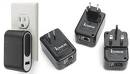

The Unofficial Java SE Embedded SDK
By Jim Connors 15 March 2011
Developing applications for embedded platforms gets simpler all
the time, thanks in part to the tremendous advances in
microprocessor design and software tools. And in particular,
with the availability of Java SE compatible Virtual Machines for
the popular embedded platforms, development has never been more
straightforward.
The real beauty behind Java SE Embedded development lies in the fact that you can use your favorite IDE (Eclipse, NetBeans, JDeveloper ...) to create, test and debug code in the identical fashion in which you'd develop a standard desktop or server application. When the time comes to try it out on a Java SE Embedded capable device, it's just a matter of shipping the bytecodes over to the device and letting it run. There is no need for complicated emulators, toolchains and cross-compilers. The exact same bytecodes that ran on your PC, run unmodified on the embedded device.
In fact, because all versions of Java SE (embedded or not) share a considerable amount of common code, we have plenty of anecdotal evidence which supports the notion that behavior -- correct or incorrect -- manifests itself identically across platforms. We refer specifically here to bugs. Now no one wants bugs, but believe it or not, our customers like the fact that behavior is consistent across platforms whether it's right or not. "Bug for bug compatibility" has actually become a strong selling point!
Having espoused the virtues of transparently developing off device, many still wish to test and debug on-device regularly as part of their development cycle. If you're the touchy/feely type, there are ample examples of affordable and supported off-the-shelf devices that could fit the bill for an Unofficial Java SE Embedded SDK. One such platform is the Plug Computer.
 The reference platform for the Plug Computer is supplied by Marvell Technology Group. Manufacturers then license the technology from Marvell to create their own specific implementations. Two such vendors are GlobalScale and Ionics. These are incredibly capable devices that include Arm processors in the 1.2GHz to 2.0GHz range, and sport 512MB of RAM and flash. There are a host of external port and interface options including USB, µUSB, SATA, GBE, SD, WiFi, ZigBee, Z-Wave and soon HDMI. Additionally, several Linux distros are available for these systems too. The typical cost for a base model is $99, and perhaps the most disruptive aspect of these systems, they consume on average about 5 watts of power.
Alongside developing in the traditional manner, the ability to
step through and examine state on these devices via remote
debugging comes as a standard feature with the Java SE-E VM.
Furthermore, you can use the JConsole application from your
desktop to remotely monitor performance and resource consumption
on the device.
So what would a bill of materials look like for The Unofficial Java SE Embedded SDK? Pretty simple actually: